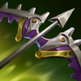
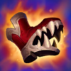

Tirador
Dificultad Alta
HABILIDADES


PASIVA • LEAGUE OF DRAVEN
Draven obtiene Adoración de sus seguidores cuando atrapa un Hacha Giratoria o cuando mata a un súbdito, monstruo o torre. Asesinar campeones enemigos le otorga oro adicional a Draven según la cantidad de Adoración que tenga.
1 • HACHA GIRATORIA
El siguiente ataque de Draven infligirá daño físico adicional. Esta hacha rebotará del enemigo hacia el aire. Si Draven la atrapa, preparará automáticamente otra Hacha Giratoria. Draven puede manejar dos Hachas Giratorias al mismo tiempo.
2 • IMPULSO SANGRIENTO
Draven obtiene velocidad de movimiento y de ataque aumentadas. La velocidad de movimiento adicional se reduce rápidamente a lo largo de su duración. Atrapar un Hacha Giratoria restablecerá el enfriamiento de Impulso Sangriento.
3 • APÁRTATE
Draven lanza sus hachas, lo que inflige daño físico a los objetivos impactados y los lanza a un lado. Los objetivos impactados quedan ralentizados.
DEFINITIVA • MUERTE RODANTE
Draven arroja dos hachas gigantes que infligen daño físico a cada unidad impactada. Muerte Rodante revierte lentamente su dirección y regresa a Draven después de impactar a un campeón enemigo. Draven también puede activar esta habilidad mientras las hachas estén a medio trayecto para hacer que regresen antes. Inflige daño reducido por cada unidad impactada y se restablece cuando las hachas revierten su dirección.
CONFIGURACIÓN
OBJETOS
-

La Sanguinaria
3300+50 Daño de Ataque
+25 Tasa de Críticos
SANGRIENTO: +15% de Vampirísmo Físico.
JURASANGRE: El Vampirísmo Físico te sobrecura y genera un escudo que absorbe de 40 a 320 de daño. Este escudo decae fuera de combate a lo largo de 10 seg. -

Espada de Carga Solari
3100+25% Tasa de Críticos
+30% Velocidad de Ataque
+15 Aceleración de Habilidad
RAYO SOLAR: Usar una habilidad acumula Resplandor (máx. 3 cargas) hasta por 10 seg. Al tener cargas acumuladas, obtiene un 25% de Tasa de Críticos. Los ataques que realizan golpes críticos usan una carga para infligir de 24 a 52 de daño mágico adicional al impacto, que aumenta hasta un 150% contra objetivos con poca vida.
Cada habilidad única solo puede generar una carga una vez cada 2 seg. -

Filo del Infinito
3400+55 Daño de Ataque
+25% Tasa de Críticos
INFINIDAD: Los golpes críticos infligen un 230% de daño en vez de 200%.
-

Recordatorio Mortal
2800+45 Daño de Ataque
ÚLTIMO SUSPIRO: +30% de Penetración de Armadura.
SEPSIS: Infligir daño físico aplica un 40% de Heridas Graves a campeones enemigos por 3 seg. Si está por debajo del 50% de Vida, este efecto aumenta a un 60% de Heridas Graves.
Heridas Graves reduce la efectividad de las curaciones y efectos regenerativos. -

Ángel Guardián
3100+40 Daño de Ataque
+40 Armadura
RESUCITAR: Tras recibir daño letal, te restaura un 50% de la Vida básica y un 30% de Maná tras 4 seg de estasis. (210 seg de enfriamiento).
-

Grebas Glotonas
1000CALZADO: +40 de Velocidad de Movimiento.
SEGUNDOS: +8% de Vampirísmo Físico.
TERCEROS: +8% de Vampirísmo Mágico.
CARRERA (ACTIVA): Aumenta la Velocidad de Movimiento un 15% durante 3 seg. Infligir o recibir daño de campeones desactiva los efectos de Carrera. (60 seg de enfriamiento). -

Encantamiento de Fajín de Mercurio
800CAPA MERCURIAL (ACTIVA): Elimina todos los efectos de control de masas que te afectan actualmente y otorga un 50% de Velocidad de Movimiento adicional durante 1.5 seg. (60 seg de enfriamiento)
No elimina los lanzamientos por el aire ni hacia atrás.
RUNAS Y HECHIZOS
-

Conquistador
Obtienes acumulaciones de fuerza adaptable al atacar a un campeón con habilidades o ataques separados. Se acumula hasta 5 veces. Al alcanzar el máximo de acumulaciones, inflige daño adaptable adicional a campeones.
POR ACUMULACIÓN: 2 - 6 de Daño de Ataque adicional o 3 - 9 de Poder de Habilidad durante 6 seg.
EFECTO ADICIONAL CON EL MÁXIMO DE ACUMULACIONES: Cuerpo a cuerpo: 10% | A distancia: 7% de daño adaptable adicional a campeones. -

Campeón
Obtienes un 8% de daño contra campeones. Pierdes un 4% cada vez que mueres hasta que el efecto desaparezca.
-
Coraza Adaptable
Otorga 50 de Vida. Mientras estés por debajo del 50% de Vida, obtienes 12 de Armadura o 12 de Resistencia Mágica según el tipo de daño que más recibiste en los últimos 60 seg. (Físico otorga Armadura | Mágico otorga Resistencia Mágica)
-

Dulces Frutos
Aumenta la curación de Frutamiel en un 25%. Cada vez que tú o un aliado cercano coma una Frutamiel, obtienes 20 de oro.
-

Barrera
ENFRIAMIENTO: 120 seg.
Obtienes un escudo que absorbe 115 de daño (115-465 basado en nivel) durante 2 seg. -

Destello
ENFRIAMIENTO: 150 seg.
Te teletransportas una distancia corta hacia delante o hacia la dirección objetivo.
CÓMO JUGAR DRAVEN
Draven es un campeón del carril del dragón de daño de ataque. Draven hace el mayor daño al principio del juego en comparación con cualquier otro campeón del carril del dragón y puede usar eso para obtener una ventaja temprana para mejorar su juego medio y tardío. El daño principal de Draven proviene de su Hacha giratoria (primera habilidad), sin embargo, tiene un costo. Cuando usa la habilidad cada vez que realiza un autoataque, debe asegurarse de levantar el hacha y, a veces, esto puede ser difícil. Cada vez que coges un hacha o matas a un súbdito / monstruo, obtienes una pila de Adoración para tu Liga pasiva de Draven. Cuando matas a un campeón enemigo, consumirás todas las acumulaciones de Adoración y obtendrás una gran cantidad de oro adicional ... pero si mueres, perderás la mitad de las acumulaciones.